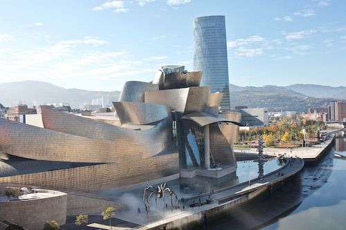

In a big part of the (Spanish) collective imagination, Bilbao is still a synonym for the industrial city. However, today, the blast furnaces and the shipyard cranes symbolize the city’s past. After an exemplary urbanistic reconversion, new architectonical symbols—such as the Guggenheim Museum—show how Bilbao has converted into a vanguard city focused on culture, business and tourism.
Icons of Bilbao
In Bilbao, there are many places that a person can visit. Among the many places, the following are the tourist minimum of the city.
Casco Viejo [Old Quarter]Tourist Route
![Plaza Unamuno [Unamuno Square] in the Old Quarter](https://commons.wikimedia.org/wiki/File:Conjunto_Hist%C3%B3rico_Art%C3%ADstico_el_Casco_viejo.jpg)
.jpg)
The Casco Viejo (‘el Casco’ for short) is the old quarter of Bilbao. The church of San Anton, together with its bridge—the bridge today is not the original that appears in the city's coat of arms—was the origin of Bilbao, to which later on the seven streets would be added: Somera, Artekale, Tendería, Belostikale, Carnicería Vieja, Barrenkale, and Barrenkale Barrena. This original nucleus, together with the Plaza Nueva [New Square], the Plaza Unamuno [Unamuno Square] and some surrounding streets, form the Casco Viejo. Here, we can look and imagine how the first commercial Bilbao of the medieval and modern ages was. At the same time, we can also discover part of the Bilbaine atmosphere while we buy in some shop, taste some pintxos in the hundreds of bars or walk through its streets.
Guggenheim Bilbao Museum Website

As of today, the Guggenheim Bilbao Museum needs little introduction. This is not only the more emblematic building of the city but the symbol of the so-called Bilbao effect: the process of urbanistic reconversion that took Bilbao from being an industrial city in decadence to a service city on the rise. Designed by the architect Frank O. Gehry, one does not need to enter the museum to appreciate the diverse curves of the characteristic titanium layers of its facade.
Even if one does not plan to visit this museum of contemporary art, one must go around the museum to appreciate the geometry of the shapes of its facade, as well as the various sculptures that surround it, among which the following stand out: the Puppy, of sculptor Jeff Koons; and Maman, of sculptor Louise Bourgeois. In the interior, we can enjoy the temporal exhibitions of the museums, as well as The Matter of Time of sculptor Richard Serra, one of the most important permanent collections of the museum.
Bilbao MetroWebsite
Even if one does not need to use the metro during Eir visit, one should visit some of the metro stations of Bilbao to appreciate their design. Unlike other older metros such as the ones of Buenos Aires, Paris or London, the Bilbao Metro is relatively new—it has existed only since 1995—and is designed in all its details by the architect Norman Foster. The late construction of the metro is why its stations are ample and luminous, in contrast with the old metros of other cities.
.JPG)
In the metro stop of Moyua, if one enters through the Ercilla/Elcano entrance, a signature by Norman Foster himself can be found. Moreover, if one has time, visiting the metro station of Sarriko is recommended because it is radically different from the other metro stations.
Athletic Club BilbaoWebsite


No presentation of Bilbao is complete without mentioning its iconic football team: the Athletic Club Bilbao. Together with Real Madrid and the Barça, this iconic team, founded in 1898, is one of the three historical teams of the (masculine) league that have always played in 1st division. Moreover, today, the Athletic is one of the teams with the most Copas del Rey in its history, only behind the Barça. However, its philosophy and fanbase characterize the Athletic over other teams.
Known as the Athletic philosophy, the Athletic Club Bilbao only accepts players from or that have been instructed in the Basque territories—understood in the broad sense of Euskal Herria. The Bilbaine fanbase characterizes itself for its devotion and fervor towards its team, which we can appreciate in the behavior of the fans before, during and after each match. This devotion—almost religious—manifests itself in a unique way in the naming of the football stadium—the San Mamés—as ‘La Catedral’ [The Cathredal], a denomination that precedes the existence of a cathedral in Bilbao.

The Female Athletic Club celebrating
the victory of the 2006/07 league
Picture by Katxijasotzaile (Public Domain)
Since 2002, the Athletic Club has had a female team. In its short history, this team has been five teams winner of the female league of football.
Walk along the EstuaryRoute (Google Earth)
Packed in the past with industries and rails, the bank of the Estuary of Bilbao is a witness to the transformation of the industrial Bilbao into the contemporary iconic Bilbao of today. Because of this, taking a walk along the estuary—from the church of San Antón to ‘la Catedral’—is the best way of getting to know the Bilbao of today and appreciate its architectural landmarks. To make this route effortless, we describe it and offer a link to Google Earth and a file in KML format.

.jpg)

We recommend beginning at the church of San Antón. There, walk towards the Mercado de la Ribera [Ribera Market] along the bank until arriving at the Teatro Arriaga [Arriaga Theater]. Then, continue through el Arenal—the riverside—until the Ayuntamiento [City Hall]. Afterward, continue along the bank, observing how the Isozaki Atea [Isozaki Gate] becomes bigger until you arrive at the ZubiZuri bridge [in Basque, literally “White Bridge”]. Once at the bridge, cross it and continue walking on the other side in the same direction until you cross under La Salve bridge and arrive at the Guggenheim Museum.
In the surrounding of the museum, you can enjoy its facade and its great sculptures. Afterward, continue through the Paseo de la Memoria [Walk of the Memory] until arriving at the Bizkaia Aretora [Biscay Auditorium] of the University of the Basque Country. Then walk towards the Plaza Euskadi [Euskadi Square], from where one can appreciate the Torre Iberdrola [Iberdrola Twoer] and the Museo de Bellas Artes de Bilbao [Bilbao Fine Arts Museum]. After this, walk to the Puente de Deusto [Deusto Bridge], a bascule bridge that can open to permit maritime traffic. From there, without crossing the bridge, go down to the walk using the stairs and continue walking along the riverside. To the left, one will see the Palacio Euskalduna [Euskalduna Hall] and will finally arrive at the dependencies of the now inexistent astilleros Euskalduna [Euskalduna shipyards], presided today by the red Carola crane.
To end the walk, we can approach to observe la Gabarra, the ship with which the Athletic parades through the estuary with its successes. Finally, after going into an “athletic mood”, we can walk to ‘La Catedral’, also known as the San Mamés Stadium.
Culture and Leisure
in Bilbao
Like any other city, Bilbao offers excellent cultural and leisure activities. Unfortunately, we cannot be entirely exhaustive. Therefore we only show some of the museums, theaters, concert halls and going out zones of Bilbao that might be of interest.
Museums
Guggenheim Bilbao Museum
Picture by Naotake Murayama (CC BY 2.0)
Emblem of the iconic Bilbao, this museum is an obligatory stop for everyone who visits Bilbao. From the inside, we can appreciate an aspect of its architecture that we cannot observe from the outside and view contemporary art exhibitions of the first level, such as the permanent sculptural installation The Matter of Time by sculptor Richard Serra.
More about Guggenheim BilbaoBilbao Fine Arts Museum

Picture by MuseoBBAABilbao (CC BY-SA 3.0)
The Bilbao Fine Arts Museum is one of the most important museums of the Basque Country and Spain. Its permanent collection contains artworks of every style and period since the 13th century, where the works of the Basque and Spanish schools stand out. Of this last school, this museum is the institution of reference.
More about the Bilbao Fine Arts Museum
Basque Museum
(Basque Ethnographic-Historical Museum)
Picture by Zarateman (CC0 1.0)
The Basque Museum—or Euskal Museoa—is the archeological and ethnographical museum of the Basque Country. Situated in the old Jesuit school, this museum allows us to learn—through its extensive collections—about the cultures, traditions, ways of being and daily routines of the people who have inhabited the Basque region through the ages.
More about the Basque Museum
Itsasmuseum Bilbao
(Maritime Museum of Bilbao)
Picture by Xabier (CC BY-SA 4.0)
The Itsasmuseum Bilbao is the maritime museum of Bilbao. Located in what was part of the astilleros Euskalduna [Euskalduna shipyards], this museum allows us to learn the history of the maritime activity of the Estuary of Bilbao. Moreover, the museum has a collection of ships that can be observed (freely) in the dry docks on the museum's exterior.
More about the ItsasmuseumThe House of the Basque Language
Picture by Azkue Fundazioa (CC BY-SA 2.0)
The House of the Basque Language—Euskararen Etxea—offers, through its Basque Language Interpretation Centre, an exhibition where we can learn about the multiple facets of one of the most singular languages of the world: Euskera, also known as the Basque language. In this way, this exhibition (with materials in Basque, Spanish, English and French) is an excellent starting point for those who want to learn more about the Basque language.
More about the House of the Basque LanguageMuseum of the Athletic Club Bilbao

The Athletic Club Museum allows us to learn in detail about this centenary football team of Bilbaine city, which has been a central part of the life of its people. In this way, whether you are a football fan or not, this museum is an excellent option for getting to know a central element of the history of Bilbao. Moreover, there is the possibility of visiting the football stadium both in a group and individually with an audio guide.
More about the Athletic MuseumTheaters and Cultural Spaces
Azkuna Zentroa - Alhóndiga Bilbao

Picture by Zarateman (CC0 1.0)
The Azkuna Zentroa - Alhóndiga Bilbao also hosts exhibitions of high cultural interest. However, this recovered old wine warehouse is today an integral cultural and leisure center where all kinds of cultural activities (lectures, dancing, theater...) are offered. Moreover, it has a library, a gym and cinemas.
More about the Alhóndiga
Teatro Arriaga
[Arriaga Theater]
.jpg)
Picture by Pedro J Pacheco (CC BY-SA 3.0 ES)
The Teatro Arriaga [Arriaga Theater] is the oldest theater of Bilbao, dating from 1890. In it, you can see theater representations, musicals, dances, concerts, zarzuela... Its name honors the Bilbaine composer Juan Crisóstomo de Arriaga, known as the “Basque Mozart”.
More about the Arriaga
Teatro Campos Elíseos
[Campos Elíseos Theater]

Picture by Zarateman (CC0 1.0)
The Teatro Campos Elíseos [Campos Elíseos Theater] is another one of the traditional theaters of Bilbao. Constructed in 1902, its facade—designed by the architect Jean Batiste Darroquy—is an example of Art Noveau architecture in the Basque Country. Moreover, after its restoration in 2010, this theater was modernized to adapt to the scenographic needs of today.
More about the Campos Elíseos
Palacio Euskalduna
[Euskalduna Hall]
.JPG)
Picture by Ardfern (CC BY-SA 3.0)
Constructed in 1999, where the astilleros Euskalduna [Euskalduna shipyards] were, the Palacio Euskalduna [Euskalduna Hall] is a conference center and concert hall, which has become another symbol of the transformation of Bilbao from an industrial city into a service city. Nowadays, the building is the venue of the Bilbao Symphony Orchestra.
More about the Euskalduna
La FuNdicIOn Aretoa
La FuNdicIOn Theater
Founded in 1986, la FuNdicIOn is a vanguard theater where one can enjoy contemporary scenic creations—of theater and dance—at the local, national and international levels. Moreover, this theater aspires to become a point of contact for the public with the vanguards of theater and dance, for which it searches for new forms of interactions artist-public.
More about la FuNdicIOn
Pabellón Nº 6
[Pavilion Nº 6]
Pabellón Nº 6 [Pavilion Nº 6] is a theatrical project and theater created in 2011 by several personalities in the world of theater and dance. Nowadays, this theater is one of the referents of the independent Basque theater, having a theater laboratory as a space of creation and encounter; and a young (theater) company for developing the project of young people formed in scenic arts.
More about el Pabellón Nº 6
Espacio Open
[Open Space]

Picture by Josué Tonelli-Cueto
Created in 2009, Espacio Open [Open Space] is a cultural center in the old cookie factory of Bilbao, in the neighborhood of Zorrotzaurre. In this space, there are creation centers, such as Fab Lab Bilbao, and several developing artistic projects, some open to the general public. This center was one of the first initiatives that contributed to the transformation of Zorrotzaurre into a neighborhood of the arts. Apart from the already mentioned Fab Lab Bilbao inside this space, Jardín Secreto [Secret Garde] and Vintage Bilbao stand out.
More about Espacio Open
Zorrotzaurre Art Work in Progress
(ZAWP)
Created in 2011, Zorrotzaurre Art Work in Progress (ZAWP) is an artistic movement situated in the neighborhood of Zorrotzaurre, which plays an essential role in transforming this neighborhood into a neighborhood of the arts. This movement counts with scenic spaces, such as the hACERIA Aretoa [hACERIA Theater], and working spaces for artists. Until 2011, it hosted Pabellón Nº 6.
More about el ZAWPGoing Out and Poteo Zones
Casco Viejo
![Plaza Nueva [New Square] in the Casco Viejo with people poteo-ing](imgs/imgCascoViejoAlterne.jpg)
Plaza Nueva [New Square] in the Casco Viejo
Picture by Mike Mirano (CC BY 2.0)
Apart from being the historical nucleus of the city, the Casco Viejo [Old Quarter] is one of the going out zones of the town with its variety of bars—together with their pintxos—and the atmosphere created by the people. Either during the day or at night, the Casco Viejo is an ideal place for poteo-ing: going from bar to bar, tasting pintxos (see below) and drinking zuritos (small amount of drink). We recommend Somera, the Plaza Nueva and the Plaza Unamuno of all the zones for this.
Moreover, in the Mercado de la Ribera [Ribera Market], we can enjoy both a gentle atmosphere and the high-quality products offered there.
Pozas
Pozas during the Basque derbi:
match between Athletic Club Bilbao and the Real Sociedad
Picture by Josué Tonelli-Cueto (©2024)
The street Licenciado Pozas or, as the locals call it, Pozas is a long bar street going from the building of the Diputación Foral de Bizkaia [Biscay Foral Council] until ‘la Catedral’, as the San Mamés Stadium is also known. Any day, we can make a pintxos route poteo-ing the bars in this street. However, this street has its maximum affluence in the surroundings of Athletic matches, which is when we can experience the Bilbaine passion and fervor for their centenary team.
Gastronomy
in Bilbao
Gastronomy is one of the principal attractions of Bilbao. The city is nowadays one of the best gastronomical destinations in our country, with a diverse, economical and high-quality offer. Bilbao is where several of the best restaurants in the world are because, as of 2022, six restaurants in Bilbao have a Michelin star. However, one does not need to go to one of these awarded restaurants to have a tremendous gastronomical experience in the city, as the economical restaurants still offer an excellent quality-price ratio.
Nowadays, Bilbao—and the Basque Country—is known for its pintxos, which are elaborate snacks of our region. Annually, the Bilbaine bars compete to prepare the best pintxo, and the city has several gastronomical routes that allow walking the town to taste the most iconic and best-valued pintxos.


.jpg){kind=link}
.jpg){kind=link}
{kind=link}
.jpg){kind=link}
_1.jpg){kind=link}
{kind=link}
{kind=link}
{kind=link}
A Brief History
of Bilbao
Being more than 700 years old, it is difficult to brief the Bilbaine history in a few paragraphs. The objective of this brief history is not to give a detailed history but to give the development of this city and its way of being in a brief text that showcases how Bilbao passed from being a commercial nucleus of the Kingdom of Castile to the iconic city of today passing by its defining industrial period.
Bilbao as a Commercial Nucleus (14th-18th centuries)
Bilbao was founded in 1300 by Don Diego López V de Haro, then señor de Vizcaya [Lord of Biscay], through the Carta Puebla [town charter], which was signed in 1301 by King Fernando IV of Castile. Today, a statute of this founder presides over the Abando square while he holds in his hand the Carta Puebla that allowed Bilbao to exist. After recovering the Señorío de Vizcaya [Lordship of Biscay] after the death of her uncle López V de Haro, who had usurped it after the death of King Sancho IV, María Díaz de Haro legitimated the foundation of Bilbao by giving a new charter to the town in 1310.
This new charter established new privileges for the city, converting Bilbao into a compulsory port for the commerce of the Kingdom of Castile with the sea. This turned Bilbao into a commercial nucleus for Castile and allowed the development of the city. However, Bilbao's commercial character—and privilege—generated tensions with the elizates and other towns of Biscay, which saw how their political and economic power was diminishing in favor of a Bilbao on the rise. In the 17th century, after Bilbao had snatched the capital of Biscay away from the town of Bermeo, a period of crisis and conflict in Biscay would end in several uprisings (the machinadas) throughout the 17th and 18th centuries. However, despite this, Bilbao was consolidating its economic and political power inside Biscay.
An example of the commercial power developed by Bilbao in this period at the national and international level can be appreciated in the English word bilbo/bilboa, which appeared at the end of the 16th century. This word, whose meaning refers to a sword or a long bar of iron with sliding shackles used to confine the feet of prisoners on shipboard, shows the importance of the commerce of objects derived from iron in Bilbao—a fact that will be fundamental in the birth of the industrial Bilbao.
The Liberal Bilbao against Carlism (19th century)
The 19th century will be marked mainly by the conflict between the more liberal—bourgeois—forms of politics that were emerging and the more traditional forms. This conflict would lead to the civil wars known as the guerras carlistas [Carlist Wars]. During this period, the bourgeois character of Bilbao materialized in the fact that Bilbao became a symbol of liberalism inside Biscay. Due to this on one part and its economic importance on the other, Bilbao became an important war objective during the First and the Third Carlist Wars. In both wars, the Carlist army besieged Bilbao neither once nor twice but three times: two in the first war and one in the third.
Despite the three Carlist sieges (in 1835, in 1836 and in 1874), Bilbao resisted becoming a symbol of the victory of the Spanish liberalism over traditionalism. These sieges are also part of the Bilbaine mythology about bacalao [cod], being the legend—most likely false because the evidence of Biscayan passion for cod dates from the end of the 18th century—is the following:
A businessman (who the legend identifies as Simón Gurtubay) asked erroneously for one ton of cod when, in a request for cod, the disjunctive ‘o’ [or] of “100 o 120 bacaladas” [100 or 120 bacaladas] was confused by a zero. Initially, this businessman was on the edge of a nervous breakdown because the requested quantity of cod was impossible to sell without it getting rotten. Fortunately for this man, his disgrace happened at the same time as the Carlist siege. This way, when food became scarce, this businessman could sell the cod at a very good price, and the cod became a popular Bilbaine dish.
Golde Age: the Industiral Bilbao (1880-1930)
In the second half of the 19th century, after its Industrial Revolution, the United Kingdom needed higher-quality steel. Motivated by this problem, the British inventor Henry Bessemer invented his new system of production of high-quality steel. Still, this method required non-phosphoric iron available only in two places of Europe: Sweden and the north of Spain, particularly the montes de Triano in the surroundings of Bilbao. This fact, together with political changes in Biscay that allowed the commerce of iron outside Biscay, allowed for an increase in iron trade between Bilbao and the United Kingdom.
As a consequence of this trade, several steel industries emerged in Bilbao and its surroundings: the Altos Hornos de Bilbao, created in 1882 after the modernization of the factory of Nuestra Señora de El Carmen (founded in 1854 by the Ybarra brothers); la Vizcaya, created in 1882 by the group lead by Pedro Pascual Gandarias; and la Iberia, created in 1890 from the company Goitia y Compañía (founded by a group of Gipuzkoans). All these companies would merge in 1902 in what would become the biggest Spanish company for most of the 20th century: the Altos Hornos de Vizcaya. This company was, in some way, the symbol of the industrial Bilbao.
This Bilbaine Industrial Revolution forged the Bilbao of the collective imagination. Bilbao multiplied by eight its population in the last decade of the 19th century due to the flux of immigrants. It was during this period that Bilbao started to expand and absorb the elizates of its surroundings, as it happened during the ensanche of Bilbao [expansion of Bilbao]. Moreover, these demographic changes were the perfect breeding ground for the local developments of the political movements that would play a central role in the Spanish politics of the 20th century: Basque nationalism, the workers' movement and socialism, republicanism and monarchical liberalism. An example of this effervescence of ideas in Bilbao is the figures associated with the city, such as Miguel de Unamuno, the famous Bilbaine writer and philosopher; Sabino Arana, founder of the Basque nationalism and the Basque Nationalist Party; Resurreción María de Azkue, founder and first president of Euskaltzaindia (Royal Academy of the Basque Language); and Indalecio Prieto, socialist politician and minister during the 2nd Spanish Republic.
Finally, it is in this industrial Bilbao where the Athletic Club Bilbao was founded in 1898. This football club, its stadium—known as 'La Catedral' [The Cathedral] from before Bilbao had a cathedral—and its particular philosophy are nowadays an essential part of Bilbaine life with more than 130 years of fervor, history and tradition.
Bilbao during the 2nd Republic, the Civil War and Francoism (1931-1975)
In the 2nd Republic, Bilbao was a city full of political pluralism—nationalists, socialists, communists, liberals...—which lasted until the arrival of the Spanish Civil War. During the Civil War, Bilbao hosted the first Basque Government led by the lehendakari José Antonio Aguirre. Despite its resistance and Cinturón de Hierro [Iron Belt], Bilbao fell against the Francoist army in 1937. However, in their retreat, the (Basque) nationalist and republican troops, by order of the Basque Government, didn't destroy the industries of Bilbao “para poder garantizar el sustento del pueblo vasco” [“in order to guarantee the livelihood of the Basque people”]. This event guaranteed the role of Bilbao and its blast furnaces as an industrial nucleus of Spain after the war.
During Francoism, Bilbao suffered high doses of repression. However, Francoism continued developing the Bilbaine industry, which attracted Bilbao immigrants from the whole of Spain. The dire conditions of these immigrants caused, in 1947, the first strike of postwar Spain. Despite the relentless response of the Francoist authorities, this strike marked the beginning of the process of activation and radicalization of the nationalist and workers' movements against the dictatorship, which would lead to a series of labor and political conflicts—each time more violent—from the 60's until the end of Francoism. In this way, when Francoism ended, Bilbao found itself full of great political and social hopes, but in a highly violent climate marked by the continuous activity of ETA and other terrorist groups beyond the end of the dictatorship.
Crisis and Industrial Reconversion (1976-1996)
After the arrival of democracy, the Basque Country articulated into a Comunidad Autónoma [Autonomous Community] through the Estatuto de Autonomía de Guernica [Statute of Autonomy of Gernika] in 1979. However, Bilbao's pretensions to become the Basque Country's capital failed when Vitoria was chosen as the capital. If this were not enough, the Bilbaine steel industry entered a deep crisis in the 80s. One of the most prominent symbols of this crisis is the closure of the astilleros Euskalduna [Euskalduna shipyards] in 1988 after its workers opposed it for years through demonstrations and confrontations with the police. Characterized by a crisis with multiple social and political conflicts, the decade of the 80s marked the end of the industrial Bilbao and its blast furnaces in the so-called proceso de reconversión industrial [process of industrial reconversion].
Moreover, this era is marked by the terrible floodings of 1983, in which the Estuary of Bilbao raised up to five meters. The impact of this flood (which took the lives of around thirty people) was increased because it happened in the middle of August, during the local festivities of Bilbao, known as Aste Nagusia. On a more positive note, in 1983 and 1984, the Athletic Club Bilbao won two consecutive times the football league, after not winning since 1956 this competition.
Silver Age: the Iconic Bilbao (since 1997)
In 1995, the closure of the Altos Hornos de Vizcaya signified the definitive death of the industrial Bilbao. However, as the industries were closing, Bilbao was preparing to carry out an urbanistic reconversion without precedents in the world. At the beginning of the 90s, Bilbao creates the association Bilbao Metrópoli-30 to transition Bilbao and its surroundings from an industrial environment to an environment of culture and services; and the society Bilbao Ría 2000 to regenerate the unused industrial spaces of Bilbao.
This regeneration process had its first milestone with the inauguration of the initial railway network of Bilbao Metro in 1995 and the Guggenheim Bilbao Museum in 1997. To these, several of the icons of the new Bilbao will conform the iconic Bilbao of today: the Isozaki Atea, the ZubiZuri, the Torre Iberdrola, the walk of the estuary, the restoration of the la Alhóndiga as a center of culture and leisure... However, the so-called Efecto Bilbao [Bilbao Effect], which so many other towns have tried to imitate, cannot be simply reduced to the architectonical icons of the city, but to a deep process of economic and structural restructuration of Bilbao and its surroundings in the 90s.